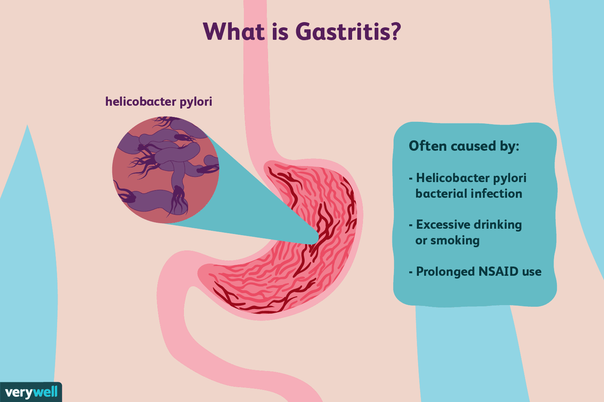

Gastritis

SYMPTOMS:
The signs and symptoms of gastritis include:
- Gnawing or burning ache or pain (indigestion) in your upper abdomen that may become either worse or better with eating
-
Nausea
-
Vomiting
-
A feeling of fullness in your upper abdomen after eating
Gastritis doesn't always cause signs and symptoms.id
CAUSES
- Gastritis is an inflammation of the stomach lining. Weaknesses or injury to the mucus-lined barrier that protects your stomach wall allows your digestive juices to damage and inflame your stomach lining. A number of diseases and conditions can increase your risk of gastritis, including Crohn's disease and sarcoidosis, a condition in which collections of inflammatory cells grow in the body.
DIAGNOSIS:
- Tests for H. pylori. Your doctor may recommend tests to determine whether you have the bacterium H. pylori. Which type of test you undergo depends on your situation. H. pylori may be detected in a blood test, in a stool test or by a breath test.
-
For the breath test, you drink a small glass of clear, tasteless liquid that contains radioactive carbon. H. pylori bacteria break down the test liquid in your stomach. Later, you blow into a bag, which is then sealed. If you're infected with H. pylori, your breath sample will contain the radioactive carbon.
-
Using a scope to examine your upper digestive system (endoscopy). During endoscopy, your doctor passes a flexible tube equipped with a lens (endoscope) down your throat and into your esophagus, stomach and small intestine. Using the endoscope, your doctor looks for signs of inflammation.
-
If a suspicious area is found, your doctor may remove small tissue samples (biopsy) for laboratory examination. A biopsy can also identify the presence of H. pylori in your stomach lining.
-
X-ray of your upper digestive system. Sometimes called a barium swallow or upper gastrointestinal series, this series of X-rays creates images of your esophagus, stomach and small intestine to look for abnormalities. To make the ulcer more visible, you may swallow a white, metallic liquid (containing barium) that coats your digestive tract.
TREATMENT
- Antibiotic medications to kill H. pylori. For H. pylori in your digestive tract, your doctor may recommend a combination of antibiotics, such as clarithromycin (Biaxin) and amoxicillin (Amoxil, Augmentin, others) or metronidazole (Flagyl), to kill the bacterium. Be sure to take the full antibiotic prescription, usually for seven to 14 days.
-
Medications that block acid production and promote healing. Proton pump inhibitors reduce acid by blocking the action of the parts of cells that produce acid. These drugs include the prescription and over-the-counter medications omeprazole (Prilosec), lansoprazole (Prevacid), rabeprazole (Aciphex), esomeprazole (Nexium), dexlansoprazole (Dexilant) and pantoprazole (Protonix).
-
Long-term use of proton pump inhibitors, particularly at high doses, may increase your risk of hip, wrist and spine fractures. Ask your doctor whether a calcium supplement may reduce this risk.
-
Medications to reduce acid production. Acid blockers — also called histamine (H-2) blockers — reduce the amount of acid released into your digestive tract, which relieves gastritis pain and encourages healing. Available by prescription or over-the-counter, acid blockers include famotidine (Pepcid), cimetidine (Tagamet HB) and nizatidine (Axid AR).
-
Antacids that neutralize stomach acid. Your doctor may include an antacid in your drug regimen. Antacids neutralize existing stomach acid and can provide rapid pain relief. Side effects can include constipation or diarrhea, depending on the main ingredients.